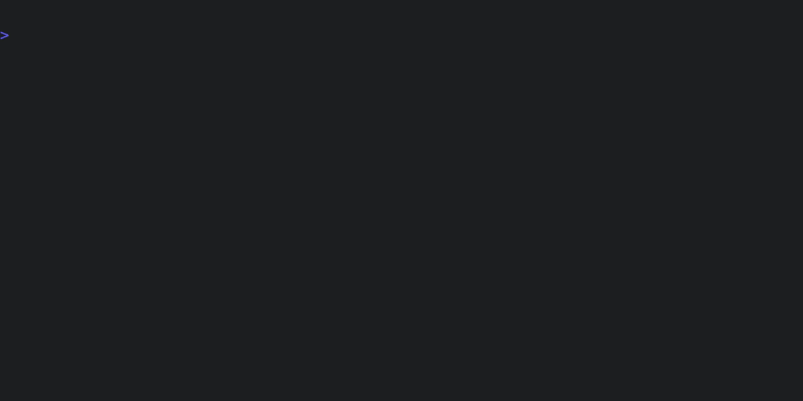
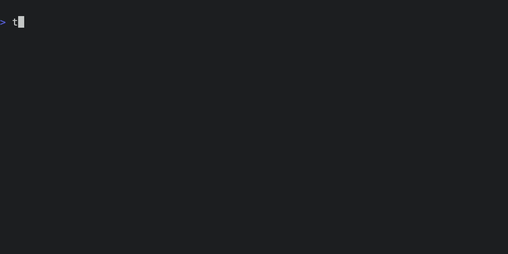

Overview
Tenx is a sharp command-line tool for AI-assisted coding.
cargo install tenx
Features
- AI-assisted code editing and generation.
- Session-based workflow for organized development.
- Preflight checks to ensure the project is consistent before prompting.
- Post-patch checks with automated model feedback and retry on failure.
- Undo, retry and re-edit steps in the session.
- Model agnostic - swap models on the fly, mid-conversation.
- Built-in support for models from OpenAI, Anthropic, DeepInfra, DeepSeek, xAI, Google and Groq, and local models through tools like Ollama.
- Built on libtenx, a Rust library for building AI-assisted coding tools.
Ethos
- Built with an uncompromsing focus on expert developers.
- Rigorous benchmarks to track the performance of our system prompt and interaction protocol against all current models.
- Stay flexible and refuse to commit deeply to any one model or API.
- Supports all practically useful models.
tenx
All of Tenx's operations are exposed through the tenx command-line tool. The command is self-documenting, and the canonical refrence is the help output:

You can ask for help on any subcommand by running tenx <subcommand> --help:

Quick start
Step 1: Configure a model
Tenx automatically configures default models based on API keys in the environment. Refer to the model config docs to see which models are configured for which key, and also how you can manually configure models if needed. For our example, let's assume we're using Claude Sonnet from Anthropic and set the corresponding environment variable:
export ANTHROPIC_API_KEY="my-api-key"
We can inspect the models that tenx has configured to make sure everything is correct:

Step 2: tenx quick
Now we have a model configured, let's write some code. Say we have a Rust
project with the following in ./src/lib.rs:
#![allow(unused)] fn main() { pub fn fibonacci(n: u64) -> Vec<u64> { vec![] } #[cfg(test)] mod tests {} }
First, we ask the model to implement the fibonacci function, using the
quick command:

The quick command is a shortcut which:
- Creates a new session (
tenx new) - Adds
./src/lib.rsto the session (tenx add src/lib.rs) - Issues a request to cut code (
tenx code)
The tenx code command is one of Tenx's workhorse commands - it asks Tenx to
use the model to cut code within the current session. If the prompt isn't
otherwise provided, code opens an editor to get the user's input.
After that, the pre checks to ensure the project is in a consistent state. This is important because it's how we validate the results of the model's edits - if the edit results in a check failing, feedback is provided back to the model and Tenx iterates until the checks pass (or we hit our retry limit). Which checks run is based on the user's configuration, and the file extensions of the files in the session. You can run the checks manually like this:

In this case, our checks are cargo check, which does type and syntax
checking, and cargo test which runs the unit test suite. After the
pre-checks, we apply the model's changes to the code, and then run the
configured post-checks. These usually overlap with the pre-checks, but may be
different, depending on the configuration. In this case, our post-checks
include cargo fmt which also re-formats the code in-place.
Step 3: tenx code
After our intial edit, we want to continue the session to make a tweak. First, let's look at what the session currently contains:

We have one step in the session, with the changes we made above. Now, we will
use the tenx code command directly to add a unit test. The entire session
context will be passed back to the model, so we can just pick up where we left
off in the conversation.

And voila! We have a completed function and its attending unit tests. Here's the final code:
#![allow(unused)] fn main() { /// Returns a vector containing the first n Fibonacci numbers. pub fn fibonacci(n: u64) -> Vec<u64> { let mut sequence = Vec::with_capacity(n as usize); if n == 0 { return sequence; } sequence.push(0); if n == 1 { return sequence; } sequence.push(1); for _ in 2..n { let next = sequence[sequence.len() - 1] + sequence[sequence.len() - 2]; sequence.push(next); } sequence } #[cfg(test)] mod tests { use super::*; #[test] fn test_fibonacci() { assert_eq!(fibonacci(0), vec![]); assert_eq!(fibonacci(1), vec![0]); assert_eq!(fibonacci(2), vec![0, 1]); assert_eq!(fibonacci(5), vec![0, 1, 1, 2, 3]); assert_eq!(fibonacci(8), vec![0, 1, 1, 2, 3, 5, 8, 13]); } } }
Fixing code with tenx fix
Let's imagine we start with the following code:
#![allow(unused)] fn main() { /// Returns a vector containing the first n numbers in the Fibonacci sequence. pub fn fibonacci(n: u64) -> Vec<u64> { vec![] } #[cfg(test)] mod tests { use super::*; #[test] fn test_fibonacci() { assert_eq!(fibonacci(0), vec![]); assert_eq!(fibonacci(1), vec![0]); assert_eq!(fibonacci(2), vec![0, 1]); assert_eq!(fibonacci(5), vec![0, 1, 1, 2, 3]); assert_eq!(fibonacci(8), vec![0, 1, 1, 2, 3, 5, 8, 13]); } } }
The fibonacci function is unimplemented so the tests will immediately fail, as we can verify
with the tenx check command:

We can now ask the model to make our checks pass with tenx fix. This runs the
checks on project, and sends any output from failing checks to the model. From
there, the model uses the edit capability of our dialect to read the needed
files to make changes. Here's what that looks like:
Note we didn't specify which files to edit (though we could have chosen to -
see tenx help fix). The output of the check here was sufficient for Sonnet to
be able to first ask to view the file, and then to make the edit itself.
Context: Rust
Let's look at using Tenx with ruskel to provide library context for Rust.
Ruskel
Ruskel takes a Rust crate or module, and produces a skeleton of its public API, using syntactically correct Rust, all in one file. If the crate or module is not local, it will consult crates.io to download the source to produce the skeleton.
As an example, here's the output of the ruskel command line tool for the very tiny termsize library.

Note that the module structure is preserved with rust mod statements, and all structs, traits, functions in the public API are included along with their docs, but the implementation is elided.
Now this is very useufl as a quick, complete command-line reference to a module, but it really shines when used to provide complete module context to a model. Tenx's Ruskel integration means you can easily and quickly provide full module documentation for any library on crates.io.
Another handy trick is to add a Ruskel context for local crates to your config. Tenx itself does this to add libtenx by default, which means that we always have an up to date snapshot of our API while working.
Ruskel and Tenx
Let's do something a bit more meaty. Misanthropy is a complete set of bindings to the Anthropic API. It's a sister project of Tenx, as well as being developed entirely using Tenx. The Ruskel output for Misanthropy is too long to include here, but you can view it yourself with:
ruskel misanthropy
Our mission is to write a simple command line tool that uses Misanthropy to make a call to the Anthropic API. First, let's define our starting point - initially, we'll just have a simple placeholder command that prints "Hello word!", like this:
fn main() { println!("Hello, world!"); }
Now, we create a new session, and add the Misanthropy Ruskel skeleton to it.
Finally, we use the tenx code command to ask Tenx to write code within the current session. For good measure, we'll also use GPT4o for this, rather than the default Claude Sonnet.

And here's the result - the model has used the detailed API definition we provided it to create a perfectly valid interaction with Anthropic.
use misanthropy::{Anthropic, Content, Message, MessagesRequest, Role}; use std::env; #[tokio::main] async fn main() { // Read API key from the environment let api_key = env::var("ANTHROPIC_API_KEY").expect("API key not found in environment"); // Create a new Anthropic client let client = Anthropic::new(&api_key); // Create a new message request let request = MessagesRequest { model: misanthropy::DEFAULT_MODEL.to_string(), max_tokens: 50, messages: vec![Message { role: Role::User, content: vec![Content::Text(misanthropy::Text::new("How do you feel?"))], }], ..Default::default() }; // Send the request to the API and await the response match client.messages(&request).await { Ok(response) => { for content in response.content { if let Content::Text(text) = content { println!("{}", text.text); } } } Err(err) => eprintln!("Error: {:?}", err), } }
For good measure, here's the output of a run of the resulting program:
As an AI language model, I don't have feelings in the same way that humans do. I don't experience emotions like happiness, sadness, or anger. My responses are generated based on the patterns and information I've learned from the vast amount
Python Unit Tests
Unlike Rust, there's no consistent way to just run unit tests for a Python project. Not only are there multiple test frameworks, but there are also a morass of different ways to specify and manage dependencies. So while Tenx includes support for linting and formatting Python with ruff, we "solve" the unit testing problem by simply not including test support directly.
Luckily, configuring an arbitrary check is very simple. Here's an example of using uv to run pytest on all Python files in a project directory:
(
checks: (
custom: [
(
name: "pytest",
command: "uv run pytest *.py",
globs: ["**/*.py"],
),
]
)
)
We can now verify that the pytest check is included in our project checks:

And we can run it on our project:
Checks
If Tenx has a unifying theory, it's this: models hallucinate, and the more thoroughly we can connect responses to a ground truth, the more useful our results will be. Add to this the fact that when a model diverges from this ground truth we can automatically ask the model to iterate towards it, and you have the core of Tenx's philosophy.
Checks are the mechanism by which we connect model responses to ground truth. While Tenx has a small number of built-in checks (which will rapidly grow in future versions), the checks mechanism is completely general and any command can be configured to be a check. All that is needed is for us to be able to detect failure, and for the check command to provide sufficient details in its output to steer the model.
Checks can modify files, so they are also how we run automated formatters over the code produced by the model. Typically, checks are run before the model is invoked to make sure the code is in a consistent state, and then again after the model has produced output, to guide the model if it produces output that doesn't meet the checks. Some checks only make sense after the model has run, so checks can be configured to run pre or post or both.
Let's take a look at Tenx's built-in checks:

There are a few things to note here. Each check has a glob pattern that
determines when it runs - a check only runs if its glob pattern matches a file
that was edited during the session. Checks are ordered - so cargo check
will perform type checking before cargo test runs unit tests. Lastly,
checks can be disabled by default - cargo clippy is a bit too noisy to run by
default, so the user has to enable it in their config or on the command line
with the --check flag.
Context
Tenx allows the user to attach context to a session - that is, information that is provided to the model, but is not editable. Often, this is reference material - manuals or documentation - but it can also be examples of output the user wants, style guides, tweaks to the model's prompt, or anything else that the user needs the model to know.
Tenx has a flexible - and growing - set of commands for including and managing
context. All the contxt commands are grouped as subcommands under tenx ctx.

One command to note here is refresh. Some context types, like url and ruskel take some time to fetch or generate. Usually, this is done once when the context is first added, but refresh lets you regenerate the data if there have been updates.
The configuration file also has a context section, where you can define default context that is added to every session.
Context Types
cmd
The cmd context type executes a shell command and uses its output as context. The command is run with sh -c, and both stdout and stderr are captured. This can be useful for including the output of tools like git log, compiler messages, or command-line tool output in your context.
file
The file context type is similar to text, but it reads the text from a file, and the name of the file is associated with the context and visible to the model. The content of the file context is refreshed every time we contact the model, so you can edit the file and the model will see the changes.
project_map
The project map is a special context that is auto-generated by Tenx itself.
It's essentially just list of files included in the project, as seen in the
tenx files command. Tenx allows a model to request to view or edit files in
the project if needed, and the project map is how it knows what files are
available.
ruskel
Ruskel is a tool that extracts the public surface area of a Rust project - that is, the public functions, types, traits, and modules - and renders it to syntactically valid Rust code. This is useful for including the API of a Rust module in the context of a session. This can be either local or any crate on crates.io.
See the Working in Rust example for a demonstration of how to use
ruskel in practice.
text
The text context type is the simplest - it's just a string of text. tenx ctx text command can load context from a file, or you can provide the text
directly through stdin.
url
The url context type fetches the content of a URL and provides it to the model.
Globs
Many Tenx comamnds and configuration options take glob patterns as arguments. The syntax for these patterns are as follows1:
?matches any single character.*matches zero or more characters.**recursively matches directories but are only legal in three situations. First, if the glob starts with**/, then it matches all directories. For example,**/foomatchesfooandbar/foobut notfoo/bar. Secondly, if the glob ends with/**, then it matches all sub-entries. For example,foo/**matchesfoo/aandfoo/a/b, but notfoo. Thirdly, if the glob contains/**/anywhere within the pattern, then it matches zero or more directories. Using**anywhere else is illegal (N.B. the glob**is allowed and means "match everything").{a,b}matchesaorbwhereaandbare arbitrary glob patterns. (N.B. Nesting{...}is not allowed.)[ab]matchesaorbwhereaandbare characters. Use[!ab]to match any character except foraandb.- Metacharacters such as
*and?can be escaped with character class notation. e.g.,[*]matches*.
In some places, negative globs are allowed. These are globs that start with
!, and they exclude files that match the pattern. For example, !**/*.rs
would exclude all Rust files from a set of files.
From docs for the globset crate.
The Project
The project defines which files are included and excluded for editing, and where the root of our directory tree is. Among other things, this is used to generate the project map we supply to the model, which lets the model ask to view or edit files if needed. See the project section of the config file for the full details.
You can view the current project configuration with with the tenx project
command:

In this case, we include all files in git, as well as the files in
./scripts/*.py.
You can view the list of files included in the project - after include rules
and exclude globs have been applied - using the tenx files command:

Many Tenx commands take a glob pattern as an argument, where the patter is matched over the files in the project. So, for instance, we can add all Rust files in the project to an edit session like so:
tenx edit "**/*.rs"
Notice that we are quoting the glob pattern to prevent the shell from expanding it.
The Session
All model interactions happen within the context of a session. A session represents a single coherent conversation, which would typically result in one commit. A session consists of the following:
- The set of files we're currently editing. This is a subset of all the files included in the project.
- The non-editable context that we're providing to the model.
- A list of steps, each of which is a request to the model and a response, along with any associated information like the patch parsed from the model response.
- Information needed to undo any step.
There are a few ways to create a session - explicitly with tenx new, which
creates a new empty session, and implicitly with commands like tenx quick and
tenx fix, both of which take a list of file globs, create a session with
those files. Consult the help for each command for more information.
You can also view the current session with the tenx session command:

The example above introduces another crucial concept - contexts. Tenx has added a project map as context to the session. Read more about contexts in the context section.
Working with sessions
The canonical reference for working with sessions is the help output of the
tenx command-line tool. However, here are a few things to explore:
- Managing session context is a key part of tenx, and is covered in the context section.
tenx edit: Add editable files to the context.tenx retry: Retry a model interaction, rolling back any changes already made. You can use retry to re-start the session at any step, and even switch models mid-session if your current model is not producing the results you need. You can also modify the prompt for a step with the--editflag.tenx reset: Reset a session to a specified step, rolling back all changes up to that step.tenx code: Continue the current session, with a new user prompt. The model will receive the full context of the session up to date.tenx clear: Clear all steps from a session, without resetting changes. Handy if you've set up context that you want to keep, but want to start a new conversation.
Configuration
Tenx uses RON (Rusty Object Notation) for its config files. Configuraton comes from three sources, in order of precedence:
- Project configuration in
.tenx.ron - Global configuration at
~/.config/tenx/tenx.ron1 - Defaults created by tenx on startup
The location of the project configuration file also determines the project root
(unless over-ridden). The first thing you should do when setting up Tnex is to
create a .tenx.ron file in the root of your project.
cd ./my/project
touch .tenx.ron
You can view the full current configuration with:
tenx config
And you can view the configuration defaults with:
tenx config --defaults
These commands output the configuration in RON format, so this is also a good way to get an overview of the configuration format.
Quick Example
Here's a minimal example from the Tenx project itself:
(
retry_limit: 18,
context: (
ruskel: ["libtenx"]
),
checks: (
enable: ["cargo-clippy"]
)
)
This bumps the retry limit, adds a ruskel skeleton of libtenx (Tenx's own library) as context, and enables the cargo-clippy check, which is not enabled by default.
This may actually be different based on your XDG configuration.
Global Values
| Field | Description |
|---|---|
session_store_dir |
Directory for storing session data. By default, this is in
~/.config/tenx. Users will rarely have to change this.
|
retry_limit |
Number of retries |
Example
(
session_store_dir: "~/.local/share/tenx",
retry_limit: 5,
)
Checks
Controls pre and post checks for code modifications.
| Field | Description |
|---|---|
custom |
Custom check configurations. Entries with the same name as a builtin will override the builtin |
builtin |
Built-in check configurations |
disable |
List of checks to disable |
enable |
List of checks to enable |
no_pre |
Skip all pre-checks |
only |
Optional single check name to run |
Check configurations have the following fields:
| Field | Description |
|---|---|
name |
Name of the check for display and error reporting |
command |
Shell command to execute, run with sh -c |
globs |
List of glob patterns to match against files for determining relevance |
default_off |
Whether this check defaults to off in the configuration |
fail_on_stderr |
Whether to treat any stderr output as a failure, regardless of exit code |
mode |
When this check should run - one of pre, post, or both |
Example
Example of configuring a custom check.
(
checks: (
custom: [
(
name: "mypy",
command: "mypy --strict",
globs: ["*.py"],
default_off: false,
fail_on_stderr: true,
mode: both,
),
],
enable: ["cargo-clippy"],
),
)
Context
Controls what context is included in model interactions by default.
| Field | Description |
|---|---|
ruskel |
List of Rust module outlines to include |
path |
List of project files to include |
project_map |
Whether to include a project file map |
text |
List of named text blocks to include |
url |
List of URLs to include |
Text blocks have the following fields:
| Field | Description |
|---|---|
name |
Name of the text block |
content |
Content of the text block |
Example
(
context: (
ruskel: ["src/lib.rs", "src/main.rs"],
path: ["Cargo.toml", "README.md"],
project_map: true,
text: [
(
name: "style_guide",
content: "- Use 4 spaces for indentation\n- Max line length 80 chars",
),
],
url: ["https://example.com/api-docs"],
),
)
Dialect
Settings related to the dialect we are using to communicate to models. For the moment, we have only one dialect, so this section is pretty simple.
| Field | Description |
|---|---|
edit |
Allow the model to request to edit files in the project map |
Example
(
dialect: (
edit: true,
),
)
Models
This section controls model selection and behavior.
| Field | Description |
|---|---|
builtin |
Built-in model configurations |
custom |
Custom model configurations. Entries with the same name as a builtin will override the builtin |
default |
The default model name |
no_stream |
Disable streaming for all models |
Builtin models
Tenx auto-configures builtin models based on the presence of API keys in environment variables:
| Environment Variable | Models Added |
|---|---|
ANTHROPIC_API_KEY |
sonnet (claude-3-5-sonnet-latest)haiku (claude-3-5-haiku-latest)
|
DEEPSEEK_API_KEY |
deepseek (deepseek-chat)
|
DEEPINFRA_API_KEY |
qwen (Qwen/Qwen2.5-Coder-32B-Instruct)llama-8b-turbo (meta-llama/Meta-Llama-3.1-8B-Instruct-Turbo)llama-70b (meta-llama/Meta-Llama-3.1-70B-Instruct)llama33-70b (meta-llama/Llama-3.3-70B-Instruct)qwq (Qwen/QwQ-32B-Preview)
|
GOOGLEAI_API_KEY |
gemini-exp (gemini-exp-1206)gemini-flash-exp (gemini-2.0-flash-exp)gemini-flash-thinking-exp (gemini-2.0-flash-thinking-exp-1219)gemini-15pro (gemini-1.5-pro)gemini-15flash (gemini-1.5-flash)gemini-15flash8b (gemini-1.5-flash-8b)
|
GROQ_API_KEY |
groq-llama33-70b (llama-3.3-70b-versatile)groq-llama31-8b (llama-3.1-8b-instant)
|
OPENAI_API_KEY |
o1 (o1-preview)o1-mini (o1-mini)gpt4o (gpt-4o)gpt4o-mini (gpt-4o-mini)
|
XAI_API_KEY |
grok (grok-beta)
|
Custom models
Models configurations come in two varieties - claude, which is specific to the Anthropic API, and openai, which can be used for any model compatible with the OpenAI API.
The possible fields for claude models are:
| Field | Description |
|---|---|
name |
The name used to refer to this model |
api_model |
The API model identifier |
key |
The API key |
key_env |
Environment variable to load the API key from if key is empty |
The possible fields for openai models are:
| Field | Description |
|---|---|
name |
The name of the model |
api_model |
The API model identifier |
key |
The API key |
key_env |
The environment variable to load the API key from |
api_base |
The base URL for the API |
can_stream |
Whether the model can stream responses |
no_system_prompt |
Whether the model supports a separate system prompt |
Example
Example of configuring a custom model using Ollama:
(
models: (
custom: [
open_ai(
name: "codellama",
api_model: "codellama",
key: "", // Ollama doesn't need an API key
key_env: "",
api_base: "http://localhost:11434/v1",
can_stream: true,
no_system_prompt: false,
),
],
default: "codellama",
),
)
Project
Configures the project - that is, the location of our file tree, and which files are included for editing.
| Field | Description |
|---|---|
include |
List of inclusion and exclusion glob patterns. Exclusion paterns start with a !. By default, all files in the root are included, unless excluded in a .gitignore, .ignore or git exclude file. |
root |
Project root directory |
Example
(
project: (
include: [
"!target/**",
"**/*.rs",
],
root: "./",
)
)
Tags
Controls the tags dialect. This is a DEVELOPER ONLY section for now, and allows you to enable functionality that is currently broken.
| Field | Description |
|---|---|
smart |
Enable smart tag handling (experimental) |
replace |
Enable replacement tags |
udiff |
Enable unified diff format (experimental) |